Project 1 Reviews
Eat It by Ramnarayanan
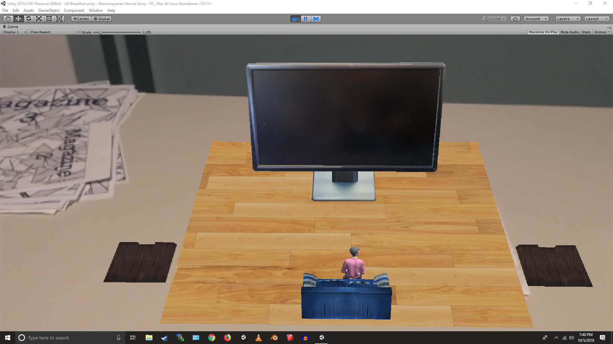 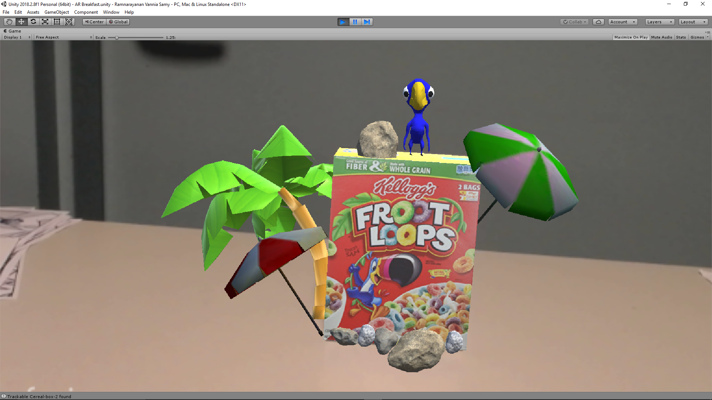 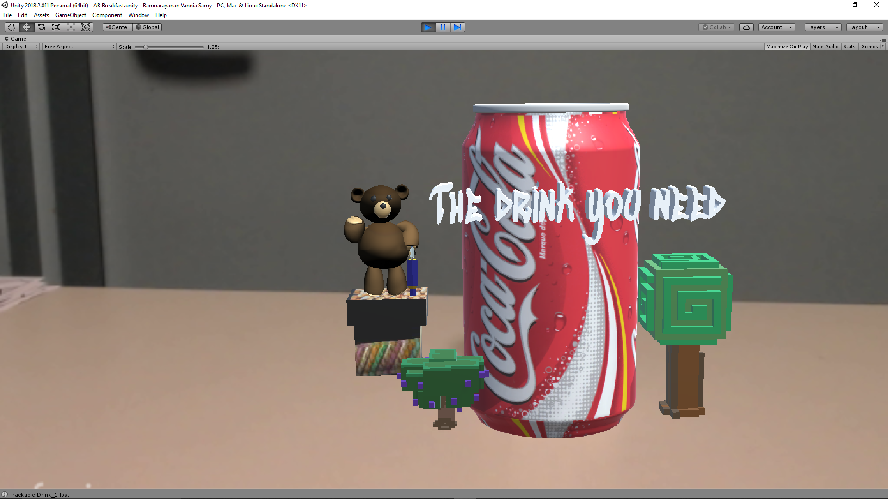
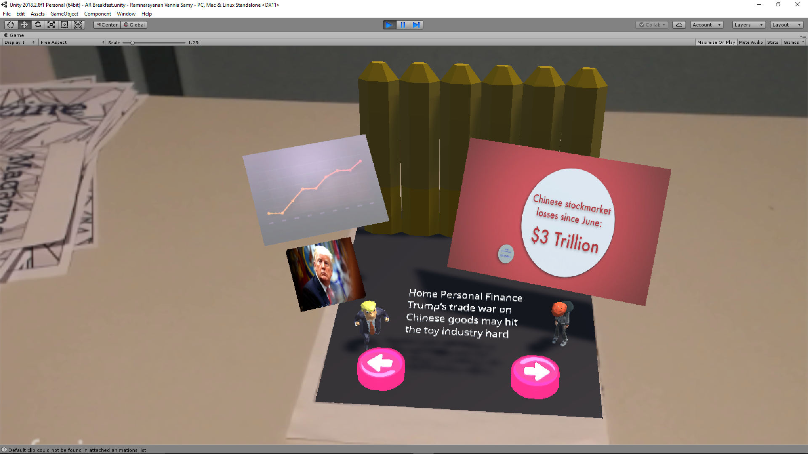 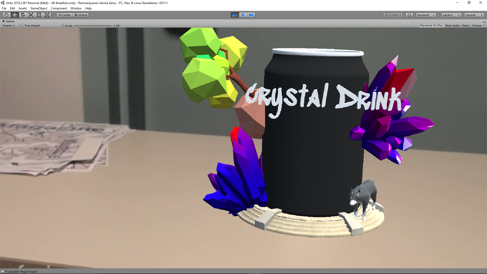 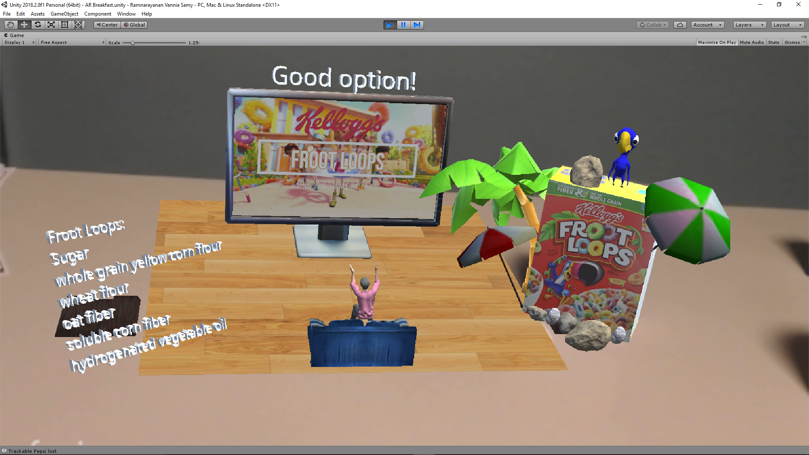
Theme
He had very out of the box thinking for his project. Each scene had its own setting. Just like Coca-Cola is its own drink he had mascot for each and promoted the products in a very creative way.
Design and Animation
The design of the project was really nice with each scene having its own theme. Although each scene could have been made better it had a completeness to it. The placemat initially had only a television set a person on a couch and two platforms. But later in the interaction more items come up. It is a very serene setting with jazz music playing in the background. The Coca-Cola had a bear that waves hi at the user and the model of the bear was made from scratch which seemed like a good work of art. Then there is the other drink called Crystal Drink that had a really cool feel to it and a wolf as a mascot. It had a rotating base that seemed very lively.
Then there was the Froot Loops cereal box that had an animated parrot on top of it that dances. The parrot was crafted in blender which I think could have had more color. It had a beach setting with rocks that brought out the summer feel. And it also had video on the back that says “Whatever froots your loops!”.
The void box had a dark theme that suggested that the box doesn’t contain healthy food. It had a model of items on each side with an animation. It was really fun exploring each side of this box especially the death star that had a black particle animation. The whole box could have had a single model in my opinion as it was towards the being cluttered side.
The magazine is one of the best models in this project with a futuristic tap and items popping out of the page. The front page had an animated tree, a globe and a satellite. Then the next page had a news video of trump and models very carefully chosen to see the news event at hand. The next page had 3 videos and model of a football to signify it is a football news. Only one of the videos had sound so that it doesn’t overlap.
Audio
Audio was used for all the models and it was carefully thought out. The placemat had a very home like feel with the jazz music. The void box had a darth vader theme in the background to signify something that is not great in the container. The crystal drink had a fresh music that makes you want to drink it.
Upon interaction various sounds are revealed between objects. The froot loops cereal box has a trumpet losing sound effect. While the crystal drink had an illuminati sound effect to create a mysterious feel to it. And the other object had their unique sounds too.
Interaction
This is one project which I found had a lot of animations made for each scene especially the placemat. Upon interaction between any of the Coca-Cola drink, Crystal Drink, Froot Loops and the void box, particle animations are revealed. The best particle animation is of the Crystal Drink with a circular light with particles emanating from the top to have a fizzing kind of reaction.
On placing the Coca-Cola or the Froot Loops on the placemat platforms we get a video of the ad on the television and the ingredients. The person cheers for or against depending on how healthy the food item is. This is a typical way that can be used for the user to motivate them to eat healthy food. On placing both the items on each of the platforms we get a dance battle with a smooth material vanishing effect and a lot more items appear that cheer for and against the dancing mascots.
Overall the whole project was great and was really fun exploring the different models and their interactions. Great work Ram!
Eat It by Bellini and Santambrogio
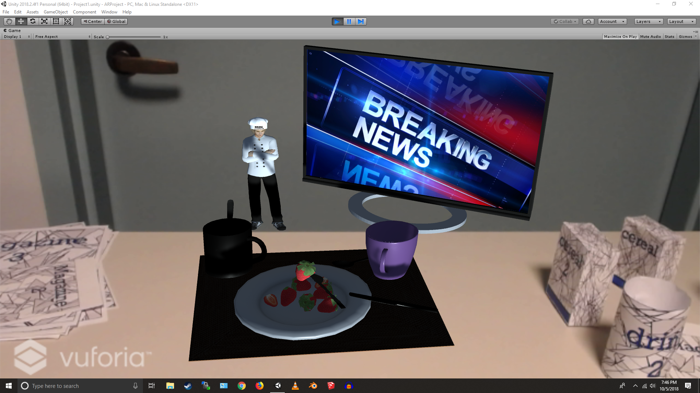 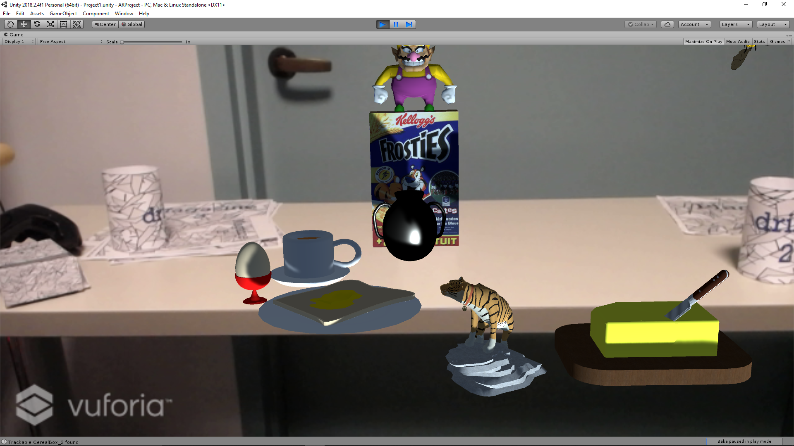 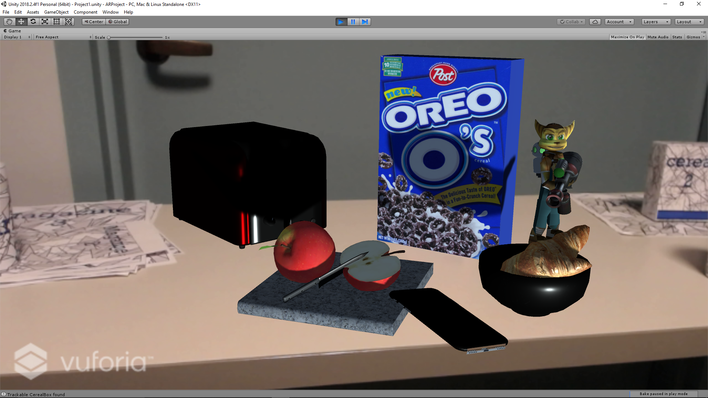
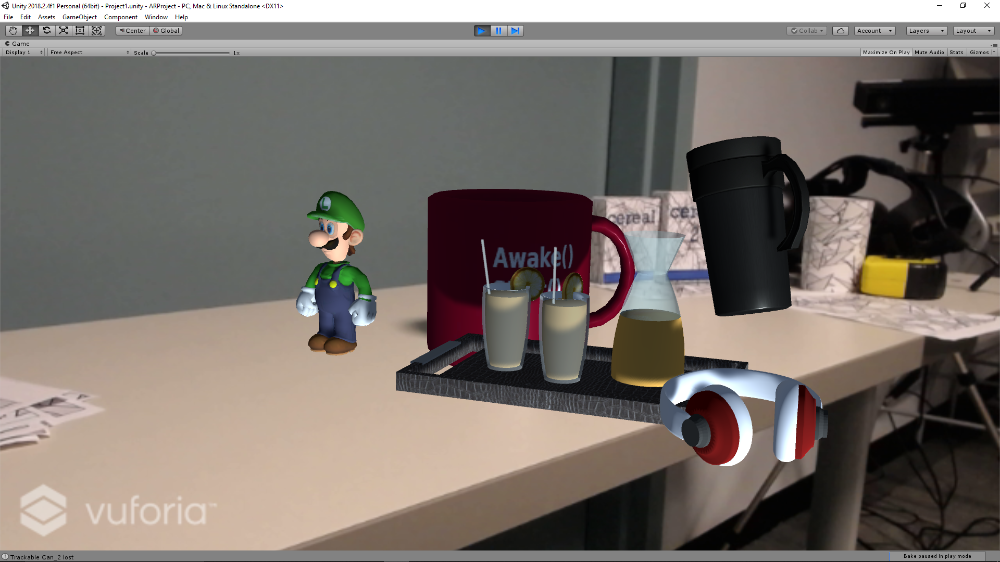 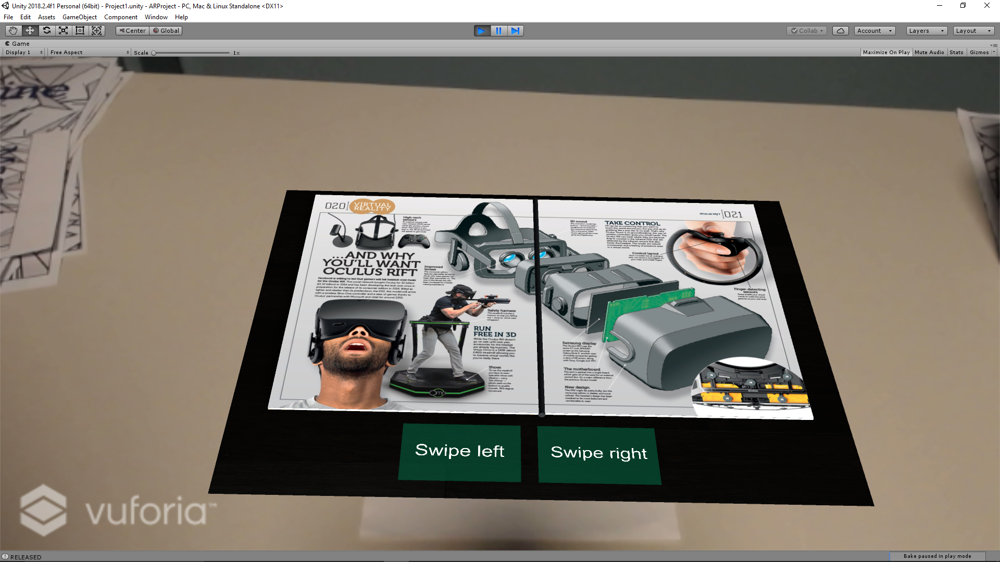 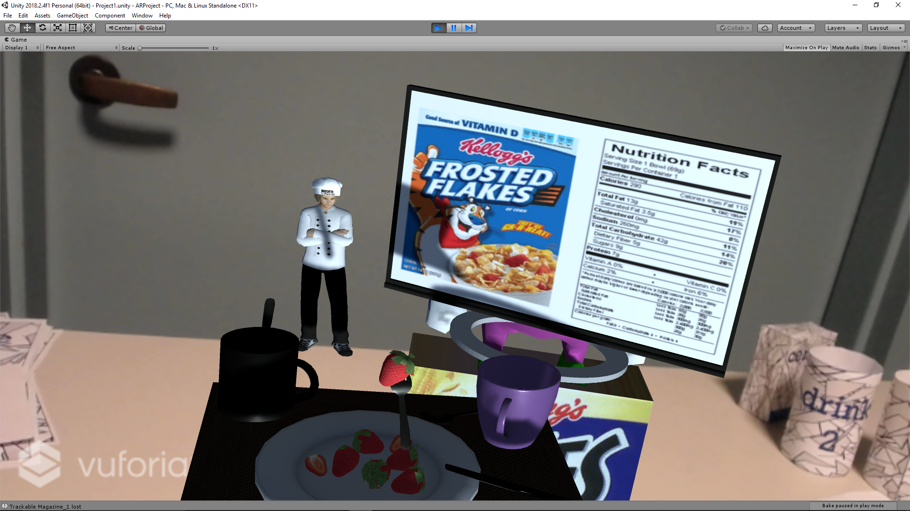
Overview
This was one of the projects that stood out from the rest. Off the bat, the first thing that caught my attention was the fact that they made all their models. From my own struggle with modelling different objects, the fact that these guys modelled all of their assets was really impressive. Apart from the models, all the animations that were present in the project were nice to look at and had some substance. It is easier to make a complicated animation that doesn’t fit the scene rather than make simple animations that actually augment your reality. I believe this is where Bellini and Santambrogio struck their sweet spot.
Theme
I was not able to identify any unified theme across the various objects. Each of the objects had their own theme and mascot. I liked how they used different characters as mascots for each object. These mascots were relatable since most of us grew up with characters like Luigi and Optimus Prime. While I felt like the theme was the biggest drawback of the project as it didn’t seem like everything fit together, the rest of the project made up for this. I must mention again that the models especially the characters were really impressive. I also liked the way all the cereal boxes were augmented. It was similar to the process that I used were I tried to convert to the targets into a legitimate looking cereal box.
Design and Animation
This was one of the best projects in terms of custom made models. The sheer amount of models that were created by them in a short amount of time given shows the effort that went into the project. However, I believe that there were a few methods to improve the look of everything as a whole. While the models themselves were impressive, using them in the right place and positioning is important. I feel like some of those objects were just placed there without putting some thought into how it adds to the whole experience.
Some of my favourite designs in the project was the Optimus Prime model and all the glass models.
They did a really good job with the glass models. The texture as well as the material that they used makes it seems like real glass.
I really loved the animations that were made use of in this project. From my personal experience developing these augmented reality applications, I could see and imagine how all the animations were made. This made me realise that there is elegance in using simple animations. While the procedure used for the animation was basic, all the animations had a certain objective. For example, the when the milk carton goes over the glass, the glass fills with milk. I feel like this is one example of how a simple animation can add so much value to the project. When the carton reaches a particular points, the small white cylinder which represents milk in the glass is scaled up to make it seem like the glass is being filled with milk.
One of the other animations that I really liked in this project was the animation of the page flips of the magazine. It was very different from what everyone else incorporated for the magazine. The flipping of pages of the magazine adds a more realistic effect to seeing an augmented reality magazine. I was really impressed by it.
Audio
There was a lot of audio that was present near the placemat, The audio was a nice touch but it was a bit overdone and loud. For a breakfast scene, the news music was too loud and disturbing. When an object is placed on the mat, there is audio output to show whether its a good choice or a bad choice. This was a good way to show whether the cereal or drink is approved but again, the audio was not ambient and too loud.
Interaction
This group had a lot of interaction between various objects with the placemat. When any object is placed on the mat, the nutritional information of the product is displayed on the television screen. However, there was no interaction between multiple objects within the scene. I expected there to be some kind of interaction between different objects but I could not find anything. Apart from that, showing the nutritional information on the TV was a good way to show nutritional information.
Conclusion
Overall, the project was really good. It was made with a lot of effort and a lot of thought went into each of the models made. I believe that small adjustments to the project could have made it even better than it is currently. One more point of improvement that I could see was the difference in sizes of the objects. The placemat was too small compared to the rest of the cereal boxes and drink. This was a bit odd to look at. But overall, great job on the project.